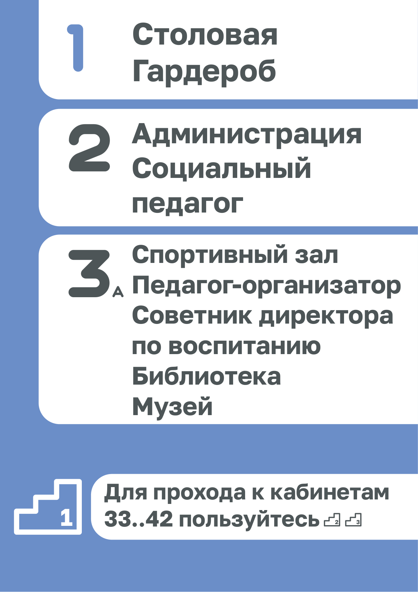
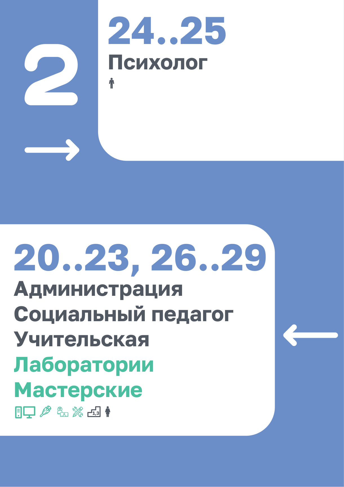
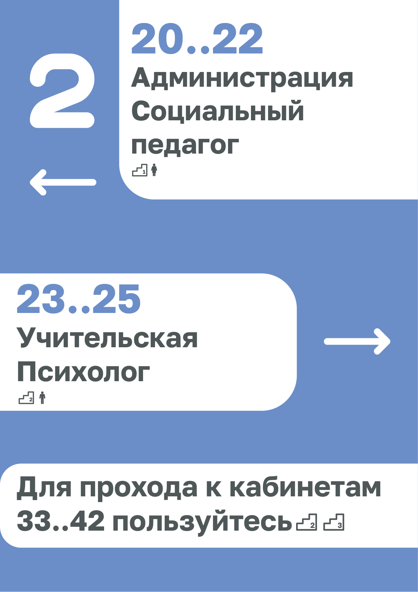
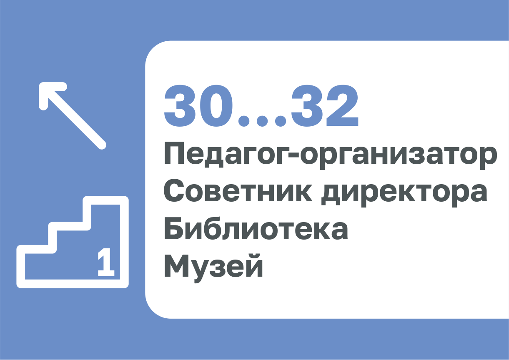
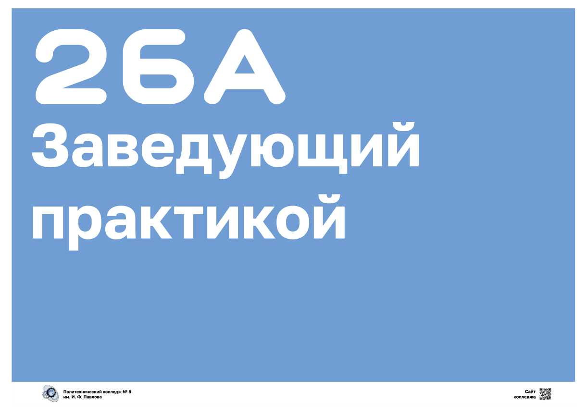
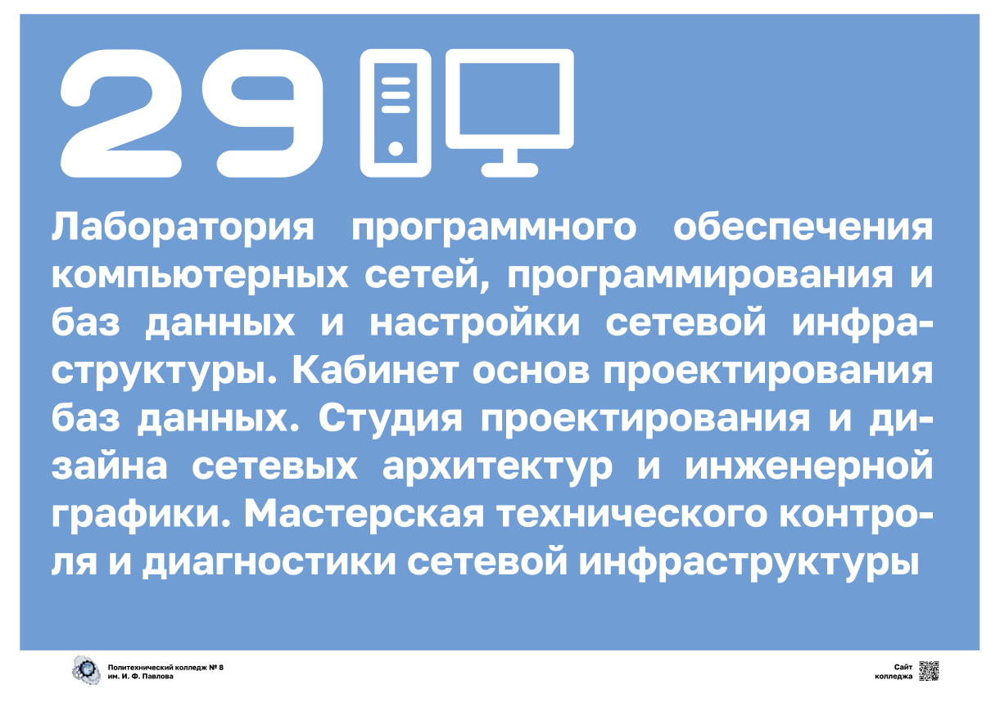
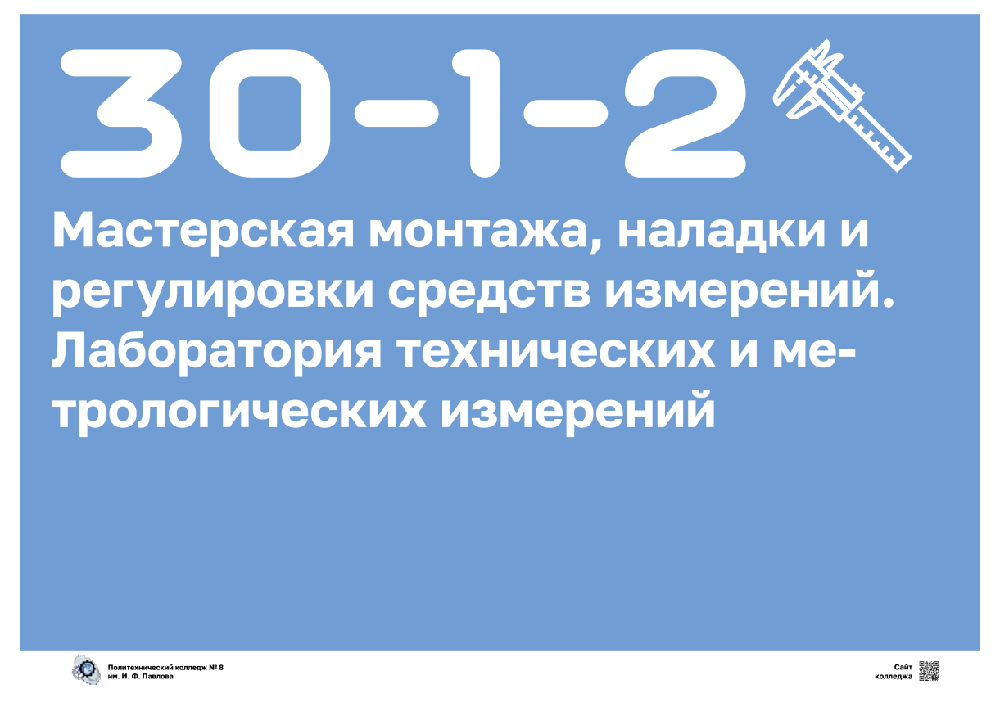

первые шаги в дизайне · 2023–2024
Оформление навигации отделения колледжа
Проба пера, а не авторский продукт. Не дизайнер — преподаватель, которому между парами поставили задачу. Знаки приняли, распечатали на бумаге и смонтировали в корпусе. Здесь — как это устроено и честный разбор.
Контекст без прикрас
Что требовалось
В корпусе появились новые кабинеты и лаборатории, а старая навигация не объясняла, как к ним пройти. Нужна была система указателей: поэтажные таблички у лестниц и дверные знаки кабинетов — чтобы студент или гость корпуса мог сориентироваться без вопросов «где это?».
В каких условиях делалось
Между парами, без дизайн-образования и брифа. За референс взяли Стандарт «Московская школа 2.0» и студийные работы по школьной навигации. Вёрстка в векторном редакторе, печать на обычной бумаге, ламинация и монтаж своими руками. Это черновой по сути вариант — но он дошёл до стен.
От задачи до монтажа
Разведка
Прошёл по этажам, зафиксировал номера кабинетов, лестничные узлы и тупики маршрутов.
Референсы
Изучил Стандарт МШ 2.0 и кейсы студий навигации: единая графика, приглушённая гамма, зонирование.
Вёрстка
Собрал модульную сетку «синий кант + белые карточки», шрифты Aqum и Golos Text, иконки и стрелки.
Печать и монтаж
Печать, ламинация, нарезка. Знаки приняли, развесили у лестниц и на дверях — система заработала.
Палитра из трёх цветов
Никаких ярких красок: по логике Стандарта МШ 2.0 навигация не должна спорить со средой. Каждый цвет получил свою роль, а не взят «потому что нравится».
Синий
Несущая основа: фоновые канты, номера лестниц, стрелки. Спокойный ориентир, который видно в любом коридоре.
Графит
Текст на белых карточках. Мягче чистого чёрного — не «кричит», но держит контраст для чтения издалека.
Мятный
Единственный акцент: лаборатории, мастерские и практики. Глаз сразу выхватывает «руки» среди кабинетов.
// типографика: Aqum — крупные округлые цифры и заголовки, Golos Text — подписи и перечни
Система лестниц: буквы и цифры
В корпусе три лестничных узла, и у них разная топология. Чтобы не объяснять это словами каждый раз, знаки дублируют одну и ту же лестницу и буквой, и цифрой.
Лестница 1 (левая), литера «А». Ведёт с 1 на 2 этаж. На 1–2 этажах у лестниц есть переход между половинами корпуса.
Лестница 2 (правая), литера «В». Симметрична первой на 1–2 этажах — поэтому таблички для этих этажей одинаковые по структуре.
Лестница 3 (центральная). Со 2 этажа поднимается на 3 и 4. На верхних этажах лестницы уже разные и перехода между ними нет — это прямо показано на знаках.
Кабинеты 33–42. Отдельная история: к ним ведут только лестницы 2 и 3, поэтому на каждом этаже видна подсказка-напоминание с иконками этих лестниц.
Сами знаки
Два формата: крупные указатели A1 у лестниц и альбомные A4 на дверях кабинетов. Ниже — реальные макеты, которые и ушли в печать.

1 этаж · лестница 1
Три зоны-карточки и подсказка про кабинеты 33–42 в нижней синей полосе.

2 этаж · левая лестница
Стрелки направлений, мятным выделены лаборатории и мастерские с иконками.

2 этаж · центр
Диапазоны кабинетов крупно, иконка лестницы с номером рядом с направлением.

3 этаж · лестница 1
Компактный вариант у двери: диагональная стрелка и иконка лестницы.

Кабинет 26А
Заведующий практикой. Номер — главный элемент, текст вторичен.

Кабинет 29
Лаборатория сетей и БД с иконками серверной стойки и монитора.

Мастерская 30-1-2
Метрология: иконка штангенциркуля сразу выдаёт профиль помещения.
Источники и заимствования
Стандарт «Московская школа 2.0»
- ▸ принцип единой графической навигации для всего здания — один язык знаков от входа до кабинета;
- ▸ приглушённая гамма без ярких красок, насыщенный акцент только точечно — отсюда мятный цвет;
- ▸ функциональное зонирование: сначала крупные блоки, внутри — детализация.
Студийные кейсы: D4S, EduDesign, Wunderpark
- ▸ крупная типографика номеров как главный навигационный элемент — номер читается раньше текста;
- ▸ цветовое кодирование зон вместо длинных объяснений;
- ▸ простая иконочная система: человек, лестница, техника — без слов понятно, что внутри.
// прямого копирования не было: принципы переложены на бюджетную бумажную реализацию без подрядчиков
Честный разбор
Что получилось
- система реально работает: напечатана, смонтирована, по ней ориентируются;
- единая модульная сетка «синий кант + белые карточки» держит все знаки вместе;
- крупные номера считываются за секунды — главное в навигации;
- мятный акцент отделяет практики от обычных кабинетов без лишних слов.
Что вышло слабо
- гайдлайна не было: отступы и кегли подбирались на глаз, между знаками есть разнобой;
- часть дверных табличек перегружена текстом — перечни через запятую трудно читать;
- иконки собраны из разных наборов, единого стиля линий у них нет;
- не проверялась читаемость для слабовидящих и реальные маршруты гостей корпуса.
Куда стремиться
- свести всё в дизайн-токены: фиксированные размеры, отступы, шрифты;
- нарисовать собственную иконочную систему в одном штрихе;
- провести аудит маршрутов со студентами, добавить контраст и вариант для слабовидящих;
- продолжить систему: напольные указатели и планы эвакуации в том же языке.
Это не портфолио дизайнера, а история о том, как рабочая задача между парами превратилась в систему, которая дожила до печати и стен. Черновой характер виден, но именно здесь появились первые насмотренность, понимание иерархии и уважение к чужой навигационной работе.